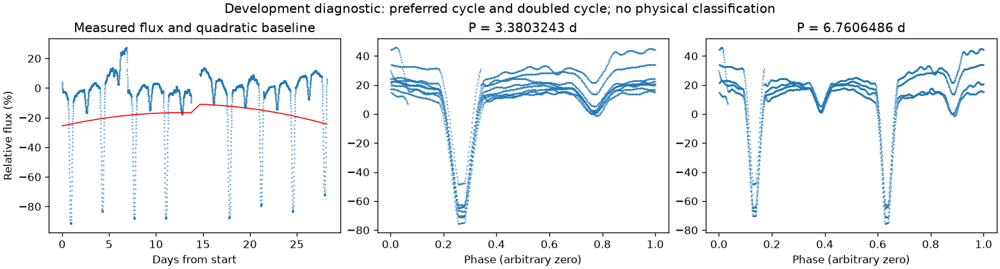
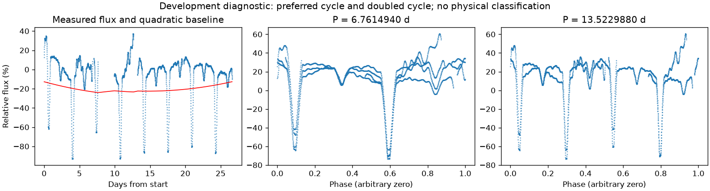

有重复信号，来源尚未充分检查
亮度重复周期约 6.76059235 天。这是优选亮度周期，未给出正式误差或物理分类。
第二版周期：3.3803243000453946 天；状态：preferred_lightcurve_cycle。

左图红线是缓慢基线；右面两图去除该基线。若未通过周期要求，两图只展示得分最高的竞争解释。
| 竞争周期（天） | 交替周期预测改善 | 两组各自改善 | 通过初筛 |
|---|---|---|---|
| 6.7596907 | 93.6% | 92.0% / 95.1% | 是 |
| 3.3803243 | 93.4% | 93.5% / 93.3% | 是 |
| 1.6901622 | -26.8% | -14.7% / -87.3% | 否 |
| 0.4218960 | -69.6% | -56.1% / -120.1% | 否 |
| 0.8450360 | -92.7% | -152.5% / -72.5% | 否 |
“预测改善”衡量用一组周期的形状预测另一组，比只有缓慢基线好多少；负数表示更差。搜索和预测共用了资料，因此这不是可信概率，也不是独立验证。
辅助数据检查：背景 SAP_BKG、指向修正 POS_CORR、亮斑中心 MOM_CENTR，或明确提供的仪器通道。
相关性只提示需要检查来源。恒星自身变暗也可能导致亮斑中心移动，不能据此断定是仪器。
第二版周期：6.761494004303621 天；状态：preferred_lightcurve_cycle。

左图红线是缓慢基线；右面两图去除该基线。若未通过周期要求，两图只展示得分最高的竞争解释。
| 竞争周期（天） | 交替周期预测改善 | 两组各自改善 | 通过初筛 |
|---|---|---|---|
| 6.7614940 | 92.3% | 93.7% / 90.7% | 是 |
| 3.3795469 | 84.0% | 82.4% / 85.0% | 是 |
| 2.2534958 | 50.5% | 47.2% / 54.3% | 是 |
| 1.1267479 | 45.8% | 41.9% / 48.8% | 是 |
| 1.6901549 | -37.9% | -30.2% / -74.8% | 否 |
| 0.5634588 | -71.1% | -118.6% / -54.6% | 否 |
| 0.8450775 | -87.1% | -73.8% / -156.4% | 否 |
“预测改善”衡量用一组周期的形状预测另一组，比只有缓慢基线好多少；负数表示更差。搜索和预测共用了资料，因此这不是可信概率，也不是独立验证。
辅助数据检查：背景 SAP_BKG、指向修正 POS_CORR、亮斑中心 MOM_CENTR，或明确提供的仪器通道。
相关性只提示需要检查来源。恒星自身变暗也可能导致亮斑中心移动，不能据此断定是仪器。